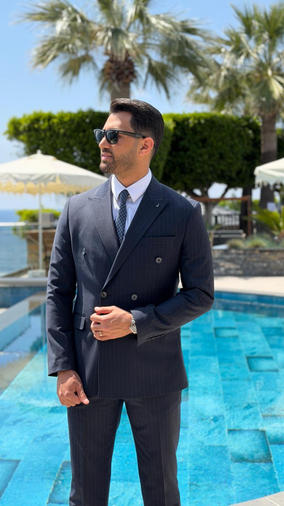
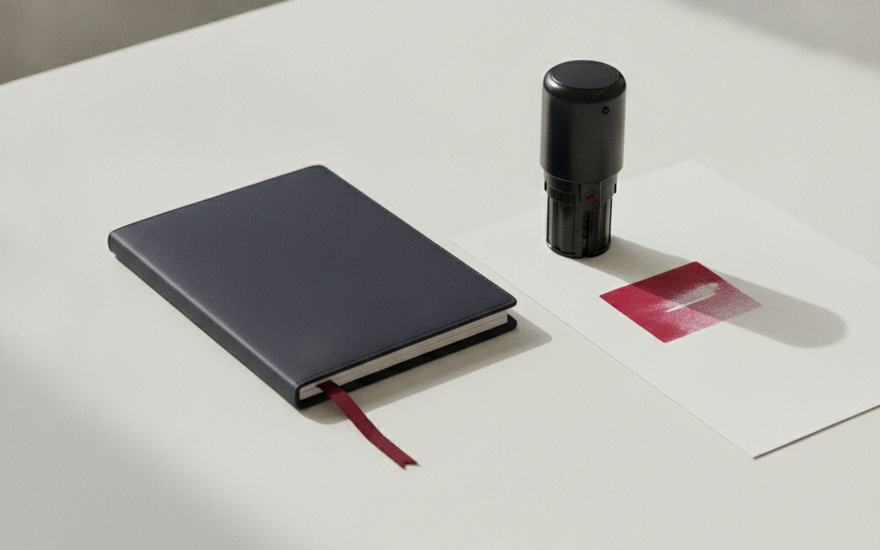

Kızılkaya Hukuk Bürosu, Antalya'da aile, iş, gayrimenkul, ceza, idare, icra, tüketici, ticaret ve yabancılar hukuku alanlarında profesyonel avukatlık ve danışmanlık hizmeti sunmaktadır.

Avukat Mücahit Çelik, Antalya Barosu'na bağlı olarak kurucu ortağı olduğu Kızılkaya Hukuk Bürosu'nda Özel ve Ceza Hukuku alanlarında serbest avukat olarak çalışmaktadır.
Hukuki süreçlerin her aşamasında müvekkillerine profesyonel destek sunarak haklarını en etkin biçimde koruyan Av. Mücahit Çelik, alanındaki derin bilgi birikimi ve deneyimiyle güvenilir bir hukuki çözüm ortağıdır.

Toros, Atatürk Blv. Başak Apt
No:11 Kat:4 No:52, 07070 Konyaaltı / ANTALYA
Türkiye Barolar Birliği onaylı sanal pos hizmeti ile ödemelerinizi hızlı ve güvenli bir şekilde yapabilirsiniz.
Online ödeme →Av. Mücahit Çelik hakkında ve büronun çalışma alanları.
Avukat Mücahit Çelik, 2020 yılında Akdeniz Üniversitesi Hukuk Fakültesi'nden mezun olmuştur. Avukatlık stajını Kızılkaya Hukuk Bürosu'nda tamamlamıştır.
Antalya Barosu'na (Sicil No: 7781) kayıtlı serbest avukat olarak, kurucu ortağı olduğu Kızılkaya Hukuk Bürosu'nda aile, iş, gayrimenkul, ceza, idare, icra, tüketici, ticaret ve yabancılar hukuku alanlarında hizmet vermektedir.
Müvekkillerine her zaman dürüst, şeffaf ve çözüm odaklı bir hizmet sunmayı ilke edinen Av. Mücahit Çelik, hukuki süreçlerin her aşamasında yanınızda olmaktadır.
Toros, Atatürk Blv. Başak Apt
No:11 Kat:4 No:52, 07070 Konyaaltı / ANTALYA
Türkiye Barolar Birliği onaylı sanal pos hizmeti ile ödemelerinizi hızlı ve güvenli yapabilirsiniz.
Online ödeme →Av. Mücahit Çelik – Kızılkaya Hukuk Bürosu olarak Antalya'da müvekkillerimize 8 farklı hukuk dalında profesyonel avukatlık ve danışmanlık hizmeti sunuyoruz.
Boşanma, nafaka, velayet ve mal paylaşımı davalarında uzman destek.
İşçi-işveren uyuşmazlıkları, tazminat ve mobbing davalarında hukuki destek.
Tahliye, kira tespiti, tapu ve imar uyuşmazlıklarında profesyonel çözümler.
Ağır ceza, soruşturma ve kovuşturma süreçlerinde etkin savunma.
İdari işlemlere karşı iptal, tam yargı ve kamulaştırma davaları.
İcra takipleri, kambiyo işlemleri ve alacak tahsil süreçleri.
Tüketici hakları, ayıplı mal ve hizmet uyuşmazlıkları.
Şirket hukuku, ticari sözleşmeler ve ticari uyuşmazlıklar.
Oturma izni, çalışma izni, vatandaşlık ve sınır dışı işlemleri.
Toros, Atatürk Bulvarı Başak Apt No:11 Kat:4 No:52, Konyaaltı/Antalya
Türkiye Barolar Birliği onaylı sanal pos hizmeti ile ödemelerinizi hızlı ve güvenli yapabilirsiniz.
Online ödeme →Hukuki süreçlerde sıkça başvurulan tazminat, harç ve ücret hesaplamalarına ilişkin pratik bilgilere aşağıdan ulaşabilirsiniz.
Hesaplama araçları yalnızca bilgi amaçlı oluşturulmuştur. Davanıza özgü detaylı bilgi ve net sonuç için lütfen tarafımıza ulaşın — her dosyanın koşulları farklıdır ve profesyonel hukuki değerlendirme gerektirir.
(0242) 244 10 66 İletişime GeçToros, Atatürk Blv. Başak Apt
No:11 Kat:4 No:52, 07070 Konyaaltı / ANTALYA
Türkiye Barolar Birliği onaylı sanal pos hizmeti ile ödemelerinizi hızlı ve güvenli yapabilirsiniz.
Online ödeme →Türk Ceza Hukuku ve Ceza Avukatının Görevleri hakkında kapsamlı bilgi.
Ceza hukuku, bireylerin ve toplumun güvenliğini sağlamak amacıyla suç ve ceza kavramlarını düzenleyen bir hukuk dalıdır. Türkiye'de ceza hukuku, 5237 sayılı Türk Ceza Kanunu (TCK) başta olmak üzere, Ceza Muhakemesi Kanunu (CMK) ve diğer ilgili mevzuat ile düzenlenmektedir.
Türk ceza hukuku, kamu düzenini ve birey haklarını korumak amacıyla suç olarak tanımlanan fiillerin neler olduğunu ve bu fiillerin karşılığında uygulanacak yaptırımları belirleyen bir hukuk dalıdır. Ceza hukuku, iki ana alt dala ayrılır:
Türk ceza hukukunun temel ilkeleri arasında kanunilik, suçta ve cezada orantılılık, kusur ilkesi, şahsi sorumluluk ve masumiyet karinesi gibi prensipler bulunur.
Suç isnadıyla karşı karşıya kalan kişilerin haklarını en iyi şekilde korumak, adil bir yargılama sürecinden geçmesini sağlamak.
Şüpheli veya sanık durumundaki bireylerin, gözaltı ve ifade alma süreçlerinde hukuki destek sağlamak.
Delil sunmak, tanıkları sorgulamak ve mahkemede etkili savunma yaparak müvekkilin haklarını korumak.
Haksız tutukluluğa karşı itiraz etmek ve tahliye taleplerinde bulunmak.
Suç mağdurlarının haklarını savunmak ve onlara hukuki destek sağlamak.
Mahkûmiyet sonrası infaz sürecinde müvekkile rehberlik etmek, hukuki destek sunmak.
Türk Ceza Kanunu'nda suçlar, topluma ve bireylere karşı işlenen fiillere göre sınıflandırılmıştır. Kanunda düzenlenen başlıca suç tipleri:
Suç isnadı ile karşılaşan bireyler açısından özgürlük, itibar ve geleceğin korunması için uzman bir avukattan destek alınması hayati öneme sahiptir. Antalya Ağır Ceza Avukatı Mücahit Çelik, ağır ceza davaları, uyuşturucu suçları, hırsızlık, dolandırıcılık ve diğer tüm ceza yargılamalarında profesyonel çözümler sunmaktadır.
Toros, Atatürk Blv. Başak Apt
No:11 Kat:4 No:52, 07070 Konyaaltı / ANTALYA
Türkiye Barolar Birliği onaylı sanal pos hizmeti ile ödemelerinizi hızlı ve güvenli yapabilirsiniz.
Online ödeme →Velayet, Nafaka ve Mal Paylaşımı Davaları.
Boşanma süreci, yalnızca bir evliliğin sona ermesi değil; aynı zamanda tarafların ekonomik düzenini, sosyal yaşamını ve özellikle çocukların geleceğini doğrudan etkileyen önemli bir hukuki süreçtir. Bu nedenle boşanma davalarında doğru hukuki destek alınması, sürecin sağlıklı ilerlemesi ve hak kaybı yaşanmaması açısından büyük önem taşır.
Antalya'da boşanma davaları, Antalya Aile Mahkemelerinde görülen ve çoğu zaman velayet, nafaka, mal paylaşımı ve tazminat gibi birçok hukuki konuyu içeren kapsamlı davalardır.
Boşanma avukatı, aile hukuku alanında uzmanlaşmış ve evlilik birliğinin sona erdirilmesi sürecinde taraflara hukuki destek sağlayan avukattır. Boşanma davaları yalnızca evlilik birliğinin sona ermesi ile sınırlı değildir; aynı zamanda mal paylaşımı, nafaka, çocuk velayeti ve tazminat gibi birçok hukuki konuyu da kapsar.
Davanın hukuki stratejisine uygun, eksiksiz dilekçe hazırlığı ve mahkemeye sunumu.
Davanın seyrini belirleyecek delillerin profesyonel olarak derlenmesi ve mahkemede sunulması.
Müvekkilin haklarına uygun nafaka ve tazminat taleplerinin belirlenmesi ve takibi.
Çocuğun üstün yararı gözetilerek velayet ve aile bireyleriyle ilişki düzenlemelerinin yapılması.
Anlaşmalı boşanma, eşlerin boşanma ve boşanmanın tüm hukuki sonuçları üzerinde anlaşması halinde açılan boşanma türüdür. Genellikle tek celsede sonuçlanabilir.
Tarafların boşanma konusunda veya boşanmanın sonuçları üzerinde anlaşamaması durumunda çekişmeli boşanma davası açılır. Türk Medeni Kanunu'na göre boşanma sebepleri:
Türk Medeni Kanunu'na göre yasal mal rejimi edinilmiş mallara katılma rejimidir. Evlilik süresince edinilen mallar paylaşılır, kişisel mallar paylaşım dışında kalır. Değerlendirilen mal türleri:
Boşanma davası devam ederken tarafların geçimini sağlamak amacıyla mahkeme tarafından verilen nafakadır.
Çocuğun bakım ve eğitim giderlerine katkı sağlamak amacıyla velayeti almayan ebeveyn tarafından ödenen nafakadır.
Boşanma sonrası ekonomik olarak zor durumda kalacak eşe verilen nafakadır.
Mahkeme velayet konusunda karar verirken öncelikle çocuğun üstün yararını dikkate alır. Değerlendirilen kriterler:
Mevcut hukuki durum analiz edilir, dava türü belirlenir, olası hukuki sonuçlar değerlendirilir.
Nüfus kayıt örnekleri, tapu kayıtları, banka hesap dökümleri, tanık beyanları gibi belgeler hazırlanır.
Boşanma davası için gerekli dilekçe hazırlanarak mahkemeye sunulur.
Tanıklar dinlenir, deliller incelenir, bilirkişi raporları hazırlanır.
Mahkeme tüm delilleri değerlendirerek boşanma hakkında karar verir.
Yukarıda yer alan bilgiler yüzeysel bir değerlendirme olup mutlak sonuç değildir. Konu ile ilgili detaylı bilgi almak için bir avukata danışmanız tavsiye edilmektedir.
Toros, Atatürk Blv. Başak Apt
No:11 Kat:4 No:52, 07070 Konyaaltı / ANTALYA
Türkiye Barolar Birliği onaylı sanal pos hizmeti ile ödemelerinizi hızlı ve güvenli yapabilirsiniz.
Online ödeme →Türk İdare Hukuku ve İdare Hukuku Alanında Avukatın Görevleri.
Türk idare hukuku, devletin idari yapısını, kamu kurum ve kuruluşlarının işleyişini ve bireylerle olan ilişkilerini düzenleyen hukuk dalıdır. Bu hukuk dalı, kamu hizmetlerinin yürütülmesi, idari kararların hukuka uygunluğu, kamu görevlilerinin sorumlulukları gibi konuları kapsar.
İdare hukuku, bireylerin kamu otoriteleri karşısında haklarını korumasını sağlamak amacıyla düzenlenmiştir ve bu alanda ortaya çıkan ihtilaflar idari yargı mercilerinde çözülmektedir.
Hukuka aykırı olduğu düşünülen idari işlemlerin yürütmesinin durdurulması veya tamamen iptali için açılan davalardır.
Bir idari işlem veya eylem nedeniyle kişisel hakları zarar gören bireylerin tazminat taleplerine ilişkin davalardır.
Atama, görevden alma, disiplin cezaları gibi konularla ilgili idari işlemlerin iptali veya tazminat talepleriyle ilgili davalardır.
Devletin kamu yararı amacıyla kişisel taşınmazlara el koymasına ilişkin ihtilafların çözümü için açılan davalardır.
İmar planları, ruhsat işlemleri, belediye kararları gibi yerel yönetimle ilgili idari işlemlerin hukuka uygunluğunun denetlenmesine ilişkin davalardır.
İdare hukuku, bireylerin devlet kurumlarıyla olan ilişkilerinde haklarını korumalarını sağlayan önemli bir hukuk dalıdır. Kamu idaresinin kararlarına karşı hukuki yollara başvurmak isteyen birey ve kurumlar, idare hukuku konusunda deneyimli avukatlardan destek alarak haklarını daha etkin bir şekilde savunabilirler.
Avukat Mücahit Çelik tarafından iptal davaları, tam yargı davaları ve idari sözleşmelerden kaynaklanan davalarda gereksinim duyulan her türlü avukatlık ve danışmanlık hizmeti verilmektedir.
Toros, Atatürk Blv. Başak Apt
No:11 Kat:4 No:52, 07070 Konyaaltı / ANTALYA
Türkiye Barolar Birliği onaylı sanal pos hizmeti ile ödemelerinizi hızlı ve güvenli yapabilirsiniz.
Online ödeme →Kıdem, ihbar, işe iade ve mobbing davalarında profesyonel destek.
İş hukuku, işçi ile işveren arasındaki bireysel ve toplu ilişkileri düzenleyen, çalışma hayatının temel kurallarını belirleyen hukuk dalıdır. Türkiye'de iş hukuku, başta 4857 sayılı İş Kanunu olmak üzere, Sendikalar ve Toplu İş Sözleşmesi Kanunu, İş Sağlığı ve Güvenliği Kanunu ile diğer ilgili mevzuat çerçevesinde düzenlenmektedir.
Türk iş hukuku, işçinin hem ekonomik hem de kişilik haklarını korumak amacıyla işçi-işveren ilişkilerinde dengenin sağlanmasını hedefleyen bir hukuk dalıdır. İşçinin daha zayıf konumda olduğu kabul edilerek, işçi lehine yorum (in dubio pro operario) ilkesi temel alınır.
İş hukukunun başlıca konuları şunlardır: iş sözleşmesinin kurulması ve sona ermesi, ücret, çalışma süreleri, yıllık izin, kıdem ve ihbar tazminatı, iş sağlığı ve güvenliği, sendikal haklar ve iş kazası tazminatları.
İşçi ve işverenin haklarını koruyan, hukuka uygun iş sözleşmelerinin hazırlanması ve denetlenmesi.
Haksız fesih durumlarında işçinin alacağı tazminatların hesaplanması ve mahkemede talep edilmesi.
Geçersiz fesih hâlinde işçinin işe iadesi için açılan davaların takibi, arabuluculuk süreci yönetimi.
İşyerinde sistematik psikolojik baskıya uğrayan işçinin haklarının korunması ve tazminat talebi.
Ödenmeyen ücret, fazla mesai, hafta tatili ve UBGT ücretlerinin tahsili için dava süreçleri.
Sigortasız çalıştırılan işçilerin SGK karşısında çalıştığının tespiti için açılan davalar.
İşçi hakları, kanuni süreler ve usul kurallarına sıkı şekilde tabi olduğundan profesyonel hukuki destek hayati önem taşır. Antalya İş Hukuku Avukatı Mücahit Çelik, kıdem-ihbar tazminatı, işe iade, mobbing ve işçi alacakları davalarında etkili çözümler sunmaktadır.
Toros, Atatürk Blv. Başak Apt
No:11 Kat:4 No:52, 07070 Konyaaltı / ANTALYA
Türkiye Barolar Birliği onaylı sanal pos hizmeti ile ödemelerinizi hızlı ve güvenli yapabilirsiniz.
Online ödeme →Tahliye, kira tespiti, tapu iptali ve imar uyuşmazlıklarında uzman destek.
Gayrimenkul ve kira hukuku, taşınmazlar üzerindeki ayni ve şahsi haklar ile bunlara ilişkin uyuşmazlıkların çözümünü düzenleyen hukuk dalıdır. Türk Medeni Kanunu, Türk Borçlar Kanunu (özellikle kira hükümleri), Tapu Kanunu, İmar Kanunu ve Kat Mülkiyeti Kanunu bu alanın temel mevzuatıdır.
Gayrimenkul hukuku; tapu iptal ve tescil davaları, izale-i şüyu (ortaklığın giderilmesi), önalım hakkı, müdahalenin men'i, ipotek ve kira sözleşmeleri gibi geniş bir uygulama alanına sahiptir. Antalya gibi yoğun gayrimenkul hareketinin olduğu şehirlerde bu alandaki uyuşmazlıklar büyük yer tutar.
Kira hukuku ise konut ve çatılı işyeri kiralarına özgü, kiracı ile kiraya veren arasındaki ilişkileri düzenler. Tahliye davaları, kira tespit davaları ve uyarlama davaları bu alanın temel davalarıdır.
İhtiyaç, temerrüt veya yeniden inşa gibi sebeplerle tahliye davalarının açılması ve takibi.
Güncel piyasa koşullarına göre kira bedelinin yeniden belirlenmesi için açılan davalar.
Hukuka aykırı tapu kayıtlarının iptali ve gerçek hak sahibi adına tescili.
Paylı veya elbirliği mülkiyetine konu taşınmazların satış yoluyla paylaştırılması.
Arsa sahibi ile müteahhit arasındaki sözleşmelerin hazırlanması ve uyuşmazlık çözümü.
Gayrimenkul, çoğu kişi için en değerli yatırımdır. Tapu, kira ve inşaat süreçlerinde olası riskleri öngörmek ve hak kaybını önlemek için Antalya Gayrimenkul Avukatı Mücahit Çelik profesyonel hukuki destek sağlamaktadır.
Toros, Atatürk Blv. Başak Apt
No:11 Kat:4 No:52, 07070 Konyaaltı / ANTALYA
Türkiye Barolar Birliği onaylı sanal pos hizmeti ile ödemelerinizi hızlı ve güvenli yapabilirsiniz.
Online ödeme →İcra takipleri, kambiyo işlemleri ve haciz süreçlerinde profesyonel takip.
İcra ve iflas hukuku, alacakların devlet zoruyla tahsilini ve borçluların borçlarını ödeyememeleri durumunda izlenecek hukuki yolları düzenleyen hukuk dalıdır. Temel mevzuatı 2004 sayılı İcra ve İflas Kanunu (İİK) olup, ticari ilişkilerin sağlıklı işlemesi için kritik öneme sahiptir.
İcra hukuku, alacaklının alacağına devlet eliyle kavuşmasını sağlayan kurallar bütünüdür. İcra takipleri ilamlı (mahkeme kararına dayalı) ve ilamsız (belge dayalı) olmak üzere iki ana kola ayrılır. Kambiyo senetlerine (çek, bono, poliçe) özgü özel takip yolları da mevcuttur.
İflas hukuku ise borçlarını ödeyemeyen tacirlerin malvarlığının tasfiyesi yoluyla alacaklılara orantılı dağıtımını düzenler. Konkordato, iflas erteleme ve iflasın açılması bu alanın başlıca konularıdır.
Senet, fatura, sözleşme veya mahkeme kararına dayalı icra takiplerinin başlatılması ve sonuçlandırılması.
Alacağın güvence altına alınması için borçlunun mal ve hesaplarına ihtiyati haciz konulması.
Kambiyo senetlerine özgü hızlandırılmış takip yolu ile alacağın tahsili ve imzaya itiraz süreçleri.
Borçlunun haksız itirazı sonucu duran takibin yargısal yolla sürdürülmesi.
Haksız icra takiplerine karşı borçlu tarafından açılacak savunma süreçlerinin yönetimi.
İcra hukuku, kanuni sürelerin kaçırılması halinde telafi edilemeyen hak kayıplarına yol açabilir. Antalya İcra Avukatı Mücahit Çelik, alacaklılar ve borçlular için profesyonel takip yönetimi sağlamaktadır.
Toros, Atatürk Blv. Başak Apt
No:11 Kat:4 No:52, 07070 Konyaaltı / ANTALYA
Türkiye Barolar Birliği onaylı sanal pos hizmeti ile ödemelerinizi hızlı ve güvenli yapabilirsiniz.
Online ödeme →Tüketici hakları, ayıplı mal ve hizmet uyuşmazlıklarında uzman çözüm.
Tüketici hukuku, mal ve hizmet alımında tüketicinin korunmasını amaçlayan, satıcı ve üretici karşısında ekonomik olarak zayıf konumdaki bireyi güçlendiren hukuk dalıdır. Türkiye'de 6502 sayılı Tüketicinin Korunması Hakkında Kanun ve ilgili yönetmelikler bu alanın temel mevzuatını oluşturur.
Tüketici hukuku; ayıplı mal ve hizmet, mesafeli sözleşmeler, taksitli satışlar, finansal hizmetler, devre tatil, paket tur, tüketici kredileri gibi geniş bir uygulama alanına sahiptir. Uyuşmazlıklarda görevli mahkemeler, parasal sınıra göre Tüketici Hakem Heyetleri veya Tüketici Mahkemeleridir.
Ayıplı mal/hizmet, garanti, iade ve sözleşmeden cayma haklarına ilişkin yargısal süreçlerin yönetimi.
Trafik kazalarında aracın uğradığı değer kaybının sigorta şirketinden veya karşı taraftan tahsili.
Satıcının/sağlayıcının ayıplı mal veya hizmet sunması durumunda ücret iadesi, değişim veya tazminat talebi.
Haksız kesinti, dosya masrafı, kart aidatı, kredi sözleşmesi şartlarından doğan uyuşmazlıkların çözümü.
Tüketicinin Korunması Hakkında Kanun, tüketicinin lehine pek çok hak tanımakla birlikte sürelerin doğru takibi şarttır. Antalya Tüketici Hukuku Avukatı Mücahit Çelik, tüketicilerin haklarının etkili biçimde korunması için profesyonel hizmet sunmaktadır.
Toros, Atatürk Blv. Başak Apt
No:11 Kat:4 No:52, 07070 Konyaaltı / ANTALYA
Türkiye Barolar Birliği onaylı sanal pos hizmeti ile ödemelerinizi hızlı ve güvenli yapabilirsiniz.
Online ödeme →Şirket hukuku, ticari sözleşmeler ve ticari uyuşmazlıklarda profesyonel danışmanlık.
Ticaret hukuku, tacirler ve ticari işletmelere ilişkin kuralları düzenleyen, ticari hayatın işleyişini güvence altına alan hukuk dalıdır. Türkiye'de 6102 sayılı Türk Ticaret Kanunu (TTK) başta olmak üzere, Sermaye Piyasası Kanunu, Rekabet Kanunu ve diğer ilgili mevzuat çerçevesinde uygulanır.
Ticaret hukuku başlıca üç ana alana ayrılır: Ticari İşletme Hukuku (tacir, ticari işletme, ticari iş ve davalar), Şirketler Hukuku (anonim, limited, kollektif ve komandit şirketler) ve Kıymetli Evrak Hukuku (çek, bono, poliçe gibi senetler). Sigortacılık ve deniz ticareti de bu alanın özel kollarındandır.
Anonim, limited ve diğer şirket türlerinin kurulması, ana sözleşmelerin hazırlanması ve tescili.
Bayilik, distribütörlük, franchise, hizmet ve mal alım-satım sözleşmelerinin müvekkil lehine düzenlenmesi.
Ortaklar arası uyuşmazlıkların çözümü, hisse devri, ortaklıktan çıkma ve çıkarma davaları.
Asliye Ticaret Mahkemelerinde görülen alacak, tazminat ve haksız rekabet davalarının yönetimi.
Şirketlere günlük operasyonel kararlar, sözleşmeler ve risk yönetimi konularında hukuki destek.
Ticari hayatta hukuki riskleri öngörmek, sözleşmeleri sağlam temellere oturtmak ve uyuşmazlıkları minimize etmek için profesyonel ticaret hukuku desteği şarttır. Antalya Şirket Avukatı Mücahit Çelik, ticari işletmelere ve girişimcilere kapsamlı hizmet sunmaktadır.
Toros, Atatürk Blv. Başak Apt
No:11 Kat:4 No:52, 07070 Konyaaltı / ANTALYA
Türkiye Barolar Birliği onaylı sanal pos hizmeti ile ödemelerinizi hızlı ve güvenli yapabilirsiniz.
Online ödeme →Oturma izni, çalışma izni, vatandaşlık ve sınır dışı işlemlerinde uzman destek.
Yabancılar hukuku, Türk vatandaşı olmayan kişilerin Türkiye'ye giriş, çıkış, ikamet, çalışma ve vatandaşlık edinim süreçlerini düzenleyen hukuk dalıdır. Antalya gibi yoğun yabancı nüfusunun bulunduğu şehirlerde bu alandaki başvuru ve uyuşmazlıklar büyük yer tutmaktadır.
Temel mevzuat olarak 6458 sayılı Yabancılar ve Uluslararası Koruma Kanunu, 5901 sayılı Türk Vatandaşlığı Kanunu, 6735 sayılı Uluslararası İşgücü Kanunu ve ilgili yönetmelikler uygulanır. Göç İdaresi Genel Müdürlüğü ve Çalışma ve Sosyal Güvenlik Bakanlığı bu alanın yetkili idari mercileridir.
İkamet izni türleri (kısa dönem, aile, öğrenci, uzun dönem, insani), çalışma izni süreçleri ve istisnai/genel yollarla Türk vatandaşlığı edinimi bu alanın ana konularıdır.
Kısa dönem, aile, öğrenci, uzun dönem ve insani ikamet izni başvurularının hazırlanması ve takibi.
Yabancı çalışan ve işveren adına çalışma izni başvurusu, uzatma ve istisnai çalışma izinleri.
Genel, evlilik, taşınmaz edinimi (250.000 USD ve üzeri) yoluyla istisnai vatandaşlık başvuruları.
Sınır dışı edilme kararına karşı 7 gün içinde İdare Mahkemesi'ne iptal davası açılması ve takibi.
Karşılıklılık, askeri yasak bölge ve yüzölçümü kontrolleri ile tapu işlemlerinin güvenli yürütülmesi.
Yabancı mahkeme kararlarının (boşanma, velayet, miras vb.) Türkiye'de tanınması ve uygulanması.
Yabancılar hukuku, idari sürelerin sıkı ve hak kayıplarının ağır olduğu bir alandır. Antalya Yabancılar Hukuku Avukatı Mücahit Çelik, yabancı uyruklu müvekkillere ikamet, çalışma, vatandaşlık ve sınır dışı süreçlerinde profesyonel destek vermektedir.
Toros, Atatürk Blv. Başak Apt
No:11 Kat:4 No:52, 07070 Konyaaltı / ANTALYA
Türkiye Barolar Birliği onaylı sanal pos hizmeti ile ödemelerinizi hızlı ve güvenli yapabilirsiniz.
Online ödeme →Aile, iş, gayrimenkul, ceza, idare, icra, tüketici, ticaret ve yabancılar hukuku alanlarında güncel makaleler.
Toros, Atatürk Blv. Başak Apt
No:11 Kat:4 No:52, 07070 Konyaaltı / ANTALYA
Türkiye Barolar Birliği onaylı sanal pos hizmeti ile ödemelerinizi hızlı ve güvenli yapabilirsiniz.
Online ödeme →Hukuki danışmanlık ve randevu için bizimle iletişime geçebilirsiniz.
Toros, Atatürk Blv. Başak Apt
No:11 Kat:4 No:52, 07070 Konyaaltı / ANTALYA
Türkiye Barolar Birliği onaylı sanal pos hizmeti ile ödemelerinizi hızlı ve güvenli yapabilirsiniz.
Online ödeme →Ödemelerinizi kredi kartıyla tek çekim veya taksitle güvenli biçimde gerçekleştirin. Türk Elektronik Para ve Ödeme Sistemleri altyapısıyla korunmaktadır.
E-Tahsilat sistemi, avukatlık hizmetleri ve yargı süreçleriyle ilgili ödemelerin kredi kartıyla güvenli bir şekilde gerçekleştirilmesini sağlayan bir ödeme platformudur. Bu sistem, müvekkillerin dava ve dosya borçlarını, masraf ödemelerini, avukatlık ücretlerini ve diğer yargı giderlerini kolayca ödemelerine olanak tanır.
E-Tahsilat sistemi, TÜRK Elektronik Para ve Ödeme Sistemleri güvencesiyle çalışmaktadır. Sistem üzerinden ödemelerinizi tek seferde veya taksitlendirme seçenekleriyle yapabilirsiniz. Taksit ve komisyon oranları, kullanacağınız kredi kartına göre değişiklik göstermektedir.
E-Tahsilat sistemi, ödemelerinizi güvenli bir şekilde gerçekleştirmenizi sağlar. 3D güvenlik uygulaması ve TÜRK Elektronik Para ve Ödeme Sistemleri güvencesiyle ödeme işlemleriniz koruma altındadır.
Ödemelerinizi internet üzerinden hızlı bir şekilde tamamlayabilirsiniz. Banka şubelerine gitmenize veya EFT/havale işlemleriyle uğraşmanıza gerek kalmaz.
E-Tahsilat sistemi, kredi kartınıza uygun taksitlendirme seçenekleri sunar. Bu sayede, ödemelerinizi daha esnek bir şekilde yönetebilirsiniz.
Yapılan ödemeler, avukat ve müvekkil arasında şeffaf bir finansal ilişki sağlar. Ödeme bilgileri anında kaydedilir ve takibi kolaydır.
E-Tahsilat sistemi, internet üzerinden 7 gün 24 saat erişilebilir olduğu için ödemelerinizi dilediğiniz zaman gerçekleştirebilirsiniz.
E-Tahsilat sistemi, kullanımı oldukça kolay ve kullanıcı dostu bir platformdur. Ödeme yapmak için aşağıdaki adımları takip edebilirsiniz:
Sitemizde yer alan E-Tahsilat bağlantısına tıklayarak ödeme sayfasına ulaşın.
Ödeme yapacağınız dosya veya dava ile ilgili bilgileri ilgili alanlara girin.
Kredi kartınıza uygun taksit seçeneğini seçin. Taksit ve komisyon oranları, kullanacağınız kredi kartına göre değişiklik göstermektedir.
Kart bilgilerinizi girerek ödemenizi güvenle tamamlayın.
Kızılkaya Hukuk Bürosu olarak, müvekkillerimize en güvenli ve hızlı ödeme yöntemlerini sunmayı hedefliyoruz. E-Tahsilat sistemi ile ödemelerinizi kolayca gerçekleştirebilir, hukuki süreçlerinizi daha pratik bir şekilde yönetebilirsiniz. Ödeme süreçleriyle ilgili her türlü soru veya destek talebi için (0242) 244 10 66 numaralı telefondan veya mucahitcelikav@gmail.com e-posta adresimizden bize ulaşabilirsiniz.
Toros, Atatürk Blv. Başak Apt
No:11 Kat:4 No:52, 07070 Konyaaltı / ANTALYA
Türkiye Barolar Birliği onaylı sanal pos hizmeti ile ödemelerinizi hızlı ve güvenli bir şekilde yapabilirsiniz.
Online ödeme →Bu hesaplama yalnızca bilgi amaçlı tahmini sonuç verir. Davanıza özgü kesin sonuç ve hukuki değerlendirme için lütfen (0242) 244 10 66 numaralı telefondan tarafımıza ulaşın.